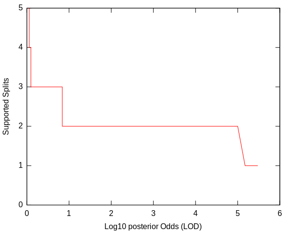
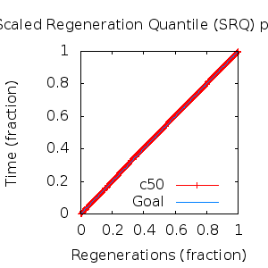
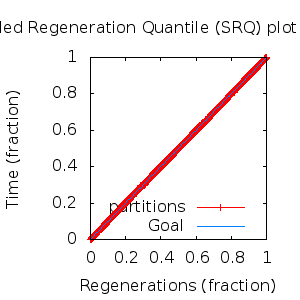

MCMC Post-hoc Analysis: 9 sequences
Data & Model
| Partition | Sequences | Lengths | Alphabet | Substitution Model | Indel Model | Scale Model |
|---|
| 1 |
E5_alpha2_aa.fas |
73 - 84 |
Amino-Acids | S1 = lg08+f |
I1 = rs07 |
scale1 ~ gamma[0.5,2] |
Scalar variables
| Statistic | Median | 95% BCI | ACT | ESS | burnin | PSRF-CI80% | PSRF-RCF |
|---|
| prior |
-87.87 |
(-111.8, -67.69) |
20.98 |
12870 |
156
|
1 | 1.003
|
| prior_A1 |
-82.05 |
(-101.6, -66.92) |
3.783 |
71371 |
195
|
1 | 1
|
| likelihood |
-1048 |
(-1061, -1035) |
5.436 |
49668 |
201
|
0.9997 | 0.9988
|
| posterior |
-1136 |
(-1157, -1118) |
25.3 |
10673 |
334
|
1 | 1.003
|
| Heat.beta |
1 |
| | | | | |
| Scale[1] |
3.103 |
(1.469, 5.551) |
1.117 |
241653 |
180
|
0.9997 | 1.001
|
| f:pi[A] |
0.06399 |
(0.03716, 0.09325) |
7.597 |
35540 |
239
|
0.9998 | 1.001
|
| f:pi[R] |
0.02191 |
(0.004715, 0.04593) |
8.838 |
30551 |
381
|
1 | 1.002
|
| f:pi[N] |
0.01799 |
(0.00394, 0.03701) |
8.634 |
31270 |
695
|
0.9997 | 1.006
|
| f:pi[D] |
0.02362 |
(0.00484, 0.05072) |
8.59 |
31432 |
937
|
1 | 1.001
|
| f:pi[C] |
0.05947 |
(0.03318, 0.08828) |
7.67 |
35201 |
472
|
0.9998 | 0.9966
|
| f:pi[Q] |
0.02973 |
(0.01029, 0.05421) |
8.861 |
30472 |
237
|
1 | 1
|
| f:pi[E] |
0.01478 |
(0.001528, 0.03481) |
8.582 |
31462 |
655
|
1 | 0.9949
|
| f:pi[G] |
0.03188 |
(0.009992, 0.06029) |
8.412 |
32099 |
313
|
1.001 | 0.9971
|
| f:pi[H] |
0.01985 |
(0.005687, 0.03945) |
9.067 |
29778 |
422
|
1 | 1.003
|
| f:pi[I] |
0.09218 |
(0.06551, 0.1212) |
8.6 |
31396 |
425
|
1 | 1.006
|
| f:pi[L] |
0.18 |
(0.1379, 0.2259) |
7.373 |
36620 |
356
|
1 | 1.004
|
| f:pi[K] |
0.01276 |
(0.0003025, 0.03271) |
10.3 |
26208 |
772
|
0.9998 | 0.9941
|
| f:pi[M] |
0.01599 |
(0.006343, 0.0286) |
8.182 |
32999 |
228
|
0.9999 | 1.007
|
| f:pi[F] |
0.07271 |
(0.04725, 0.1014) |
7.888 |
34228 |
182
|
1.001 | 1.006
|
| f:pi[P] |
0.03254 |
(0.01026, 0.06127) |
8.204 |
32909 |
323
|
0.9999 | 1.003
|
| f:pi[S] |
0.07197 |
(0.04283, 0.105) |
7.834 |
34465 |
346
|
1 | 1.004
|
| f:pi[T] |
0.05751 |
(0.03391, 0.0852) |
7.561 |
35712 |
474
|
1 | 0.995
|
| f:pi[W] |
0.01077 |
(0.001297, 0.02548) |
8.795 |
30698 |
290
|
1 | 1.003
|
| f:pi[Y] |
0.0298 |
(0.01306, 0.05022) |
8.736 |
30907 |
606
|
1 | 0.9986
|
| f:pi[V] |
0.1161 |
(0.08462, 0.1502) |
7.908 |
34141 |
449
|
1 | 1.002
|
| rs07:mean_length |
2.346 |
(1.335, 4.08) |
3 |
90013 |
215
|
0.9997 | 1.002
|
| rs07:log_rate |
-3.909 |
(-4.51, -3.297) |
2.073 |
130272 |
154
|
0.9999 | 0.9996
|
| |A1| |
90 |
(86, 94) |
5.857 |
46099 |
209 |
0.8333 | 1.001
|
| #indels1 |
11 |
(8, 14) |
3.443 |
78426 |
127 |
0.75 | 0.9983
|
| |indels1| |
24 |
(18, 32) |
1.91 |
141358 |
208 |
0.9091 | 1.003
|
| #substs1 |
189 |
(181, 195) |
3.603 |
74929 |
139 |
0.8889 | 0.9983
|
| Scale1*|T| |
3.438 |
(2.845, 4.099) |
3.499 |
77162 |
357
|
1 | 1
|
| |A| |
90 |
(86, 94) |
5.857 |
46099 |
209 |
0.8333 | 1.001
|
| #indels |
11 |
(8, 14) |
3.443 |
78426 |
127 |
0.75 | 0.9983
|
| |indels| |
24 |
(18, 32) |
1.91 |
141358 |
208 |
0.9091 | 1.003
|
| #substs |
189 |
(181, 195) |
3.603 |
74929 |
139 |
0.8889 | 0.9983
|
| |T| |
1.11 |
(0.5155, 1.874) |
1 |
270003 |
180
|
1 | 1.001
|
Phylogeny Distribution


Alignment Distribution
Partition 1
|
|
|
Diff |
|
Min. %identity |
# Sites |
Constant |
Informative |
| Initial |
FASTA |
HTML |
Diff |
|
7.89% |
84 |
1 (1.19%) |
73 (86.9%) |
| Best (WPD) |
FASTA |
HTML |
|
AU |
24.1% |
88 |
11 (12.5%) |
67 (76.1%) |
Mixing
Statistics: | scalar burnin | 937 | | scalar ESS | 1.067e+04 | | topological ESS | | | ASDSF | NA | | MSDSF | NA | | PSRF CI80% | 1.001 | | PSRF RCF | 1.007 |
|  |
Analysis
directory: /work/awillemsen/bali-phy/AlphaPVs_E5_aa_new
version: 3.3
| chain # | burnin | subsample | Iterations (after burnin) | command line | subdirectory |
|---|
| 1 |
10000 |
1 |
90000 |
bali-phy E5_alpha2_aa.fas -s 62354 -i 100000 -n AlphaPVs_E5_alpha2 |
AlphaPVs_E5_alpha2-1 |
| 2 |
10000 |
1 |
90000 |
bali-phy E5_alpha2_aa.fas -s 74311 -i 100000 -n AlphaPVs_E5_alpha2 |
AlphaPVs_E5_alpha2-2 |
| 3 |
10000 |
1 |
90000 |
bali-phy E5_alpha2_aa.fas -s 92841 -i 100000 -n AlphaPVs_E5_alpha2 |
AlphaPVs_E5_alpha2-3 |
| P(data|M) = -1059.807 +- 0.106
|
Complete sample: 168
topologies |
95% Bayesian credible interval: 52 topologies |
Model and priors
Tree (+priors)
| topology | ~ uniform on tree topologies |
| branch lengths | ~ iid[num_branches[T],gamma[0.5,div[2,num_branches[T]]]] |
Substitution model (+priors)
| S1 | = |
lg08+f
| f:pi | ~ | dirichlet_on[letters[@a],1]
|
|
Indel model (+priors)
| I1 | = |
rs07
| rs07:log_rate | ~ | laplace[-4,0.707]
|
| rs07:mean_length | ~ | exponential[10,1]
|
|
Scales (+priors)
{kind=link}
{kind=link}
{kind=link}
{kind=link}
{kind=link}
{kind=link}
{kind=link}
{kind=link}